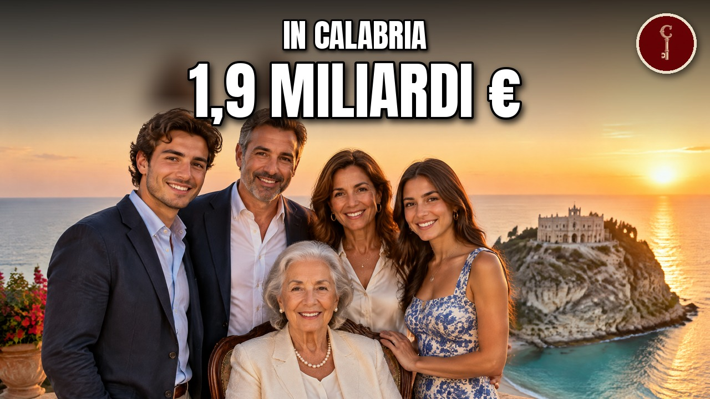

Calabria
Le 20 famiglie calabresi più RICCHE (una lavora in una ex fabbrica Coca-Cola)

Guarda il video su YouTubeFonti della ricerca
- Nonostante i limiti in porto a Genova l'utile di Spinelli sale a 25,3 milioni
- A.z. Spa - scheda azienda
- Gruppo Spinelli si avvicina a Grimaldi ed entra in Alis
- Sede Capua 1880
- Floriano Noto, chi è e cosa fa l'imprenditore presidente del Catanzaro
- Capua 1880 - sito ufficiale
- Agrumaria Reggina - sito ufficiale
- Audi Zentrum Calabria - Chi siamo
- Classifica regionale per fatturato (Calabria)
- Aldo Spinelli - Wikipedia
- Capua Srl: Italian Bergamot - Imitated but Never Duplicated
- Aldo Spinelli: l'affare con Hapag nell'interesse dei miei collaboratori, altri due gruppi erano interessati
- Who is Aldo Spinelli, the entrepreneur former owner of Genoa and Livorno Calcio
- Soral Srl
- La classifica delle migliori imprese di Catanzaro nel 2026: chi sono e quanto fatturano
- Coop Alleanza 3.0 expands into Italy's Calabria region
- Genova per voi: profilo di Aldo Spinelli, da mozzo di Ravano a padrone del Genoa
- The regeneration of a former [Coca-Cola plant] in harmony with the landscape of Calabria
- Comunicato stampa SIMEST - Agrumaria Reggina
- Caso Genoa Port Terminal: Spinelli e AdSP soccombenti in Consiglio di Stato
- Callipo: diversificando portiamo la Calabria nel mondo
- Tonno Callipo, quel buon sapore del welfare d'azienda
- A company tale
- Un secolo di gusto mediterraneo, parla Pippo Callipo
- Callipo, una storia centenaria
- Inchiesta Amaro del Capo, quando la 'Ndrangheta non fa notizia
- Inchiesta su 'Amaro del capo' e il clan di 'ndrangheta, i fondatori: 'Siamo puliti'
- Vecchio Amaro del Capo, famiglia Caffo e 'ndrangheta (Mancuso): cosa sappiamo davvero
- Fango su imprenditore Caffo? Inchiesta del Domani
- Gruppo Chiappetta Centro Usato - chi siamo
- Calabra Maceri e servizi SpA
- Chi siamo - Calabra Maceri
- Green e tecno economy, Calabra Maceri realizza l'intera filiera industriale
- Ecologia Oggi SpA
- Ecologia Oggi SpA - azienda
- Cessione Cosenza, Guarascio risponde a Rota: chiede di migliorare l'offerta
- Il Cosenza deve bruciare i tempi: la società è in piena programmazione
- Cosenza, trattativa ferma per la cessione: Rota pronto a un tentativo
- Cosenza, Guarascio: situazione inverosimile, sono pronto a cedere ma no ai ricatti
- Cosenza rivuole lo stadio: ricorso per il San Vito-Gigi Marulla
- Guarascio: non voglio essere il Cellino di Cosenza, posso riportare il club in B
- Raffaele SPA - Gruppo Raffaele
- Il Gruppo Raffaele - storia
- Perrone S.r.l. - distribuzione alimentare in Calabria
- Belvedere Extra Virgin Olive Oil in PET lt5
- Gruppo Oleario Portaro - Panjiva
- Calme Taranto Cement Plant
- Calme Group - Global Cement Report
- Perrone Srl - Atoka
- Detercart Lombardo Srl Credit Report
- La Nave Srl - Atoka
- RAFFAELE SpA Show Room Lamezia Terme
- Fatturato aziende Calabria (via ricerca Perplexity del 07/11)
- Dical S.r.l. - ZoomInfo company profile
- Negozi Trony a Polistena
- Banco Metalli Italiano Spa: bilancio e visure disponibili
- Banco Metalli Italiano - il tuo compro oro di fiducia
- Sorinat (Gruppo a marchio Conad), Lamezia Terme - Italpress, 5 maggio 2023
- Gli sconti del nuovo volantino Conad e i negozi (Lamezia Terme)
- Lamezia, la Paradiso Group apre le porte ai nuovi brand Omoda e Jaecoo (publiredazionale)
- Paradiso Group
- C.D.GEST. SRL - Atoka
- Birra Cala - Company Profile, Pitti Immagine Taste 18
- Delcom Srl - DAF aus Rende
- Vadala' Srl
- a propos de nous - Vadala' Srl
- vadala srl
- Chi siamo - Sardanelli (Maestri tonnieri dal 1817)
- Sardanelli - You Dream Italy
- Sardanelli - Maestri tonnieri dal 1817
- chi siamo - Safra Motor Srl
- Farmaceutici Tripodi Eredi Srl
- Safra Motor
- Arpaia S.p.a. (P.IVA 02708590795)
- Scubidu' Srl (P.IVA 00941030801)
- Elleduegi S.r.l. (P.IVA 03329180792)
- Trade Erregi Srl
- Lp Group Srl (Rizziconi)
- Erregici Srl
- San Vincenzo Salumi (Speciale Small Giants 2021)
- San Vincenzo - Vero Salume di Calabria
- DECRETO DI PRESA D'ATTO VARIAZIONE PRODUTTIVA (Decreto Dirigenziale n. 17681 del 25/11/2025)
- Sposato Costruzioni Srl | Costruzione di strade e autostrade a Montalto Uffugo | Dati e Contatti
- Certified company detail (Canale Srl)
- AUTOVEICOLI MANTELLA S.R.L., 27 classified ads
- Fratelli Circosta S.r.l.: fatturato 2024 e P.IVA 01418790802
- Auto 'C' S.r.l.: fatturato 2024 e P.IVA 01701050799
- Mangiatorella Spa: fatturato 2024 e P.IVA 00132190802
- Mondial Calabra S.r.l.: fatturato 2023 e P.IVA 01120070808
- Beauty Prof Spa: fatturato 2024 e P.IVA 01622260808
- Metal Carpenteria Srl: fatturato 2024 e P.IVA 00204210793
- Icb Macchine S.r.l.: fatturato 2024 e P.IVA 02678120789
- S.e. Servizi Ecologici S.r.l.: fatturato 2024 e P.IVA 02320530807
- Tema Motori S.r.l': fatturato 2024 e P.IVA 01630110789
- R Ed. El. S.r.l.: fatturato 2024 e P.IVA 00361930803
- Biemme Finestre Srl | Fabbricazione di porte, finestre ... a Gioia Tauro | Dati e Contatti
- Morfu' Srl | Costruzione di edifici residenziali e non residenziali a Corigliano-Rossano | Dati e Contatti
- Morfu' S.r.l.: fatturato 2023 e P.IVA 02340850789
- Biemme Finestre Srl: bilancio 2025 e visura camerale
- Morfu Srl: fatturato, utile e visure disponibili
- Marten S.r.l.: fatturato 2024 e P.IVA 01923350795
- Eurovetro S.r.l.: fatturato 2024 e P.IVA 02962960791
- Europa Commerciale Srl: fatturato 2024 e P.IVA 03201710799
- Ecoross Srl: fatturato 2025 e P.IVA 01936880788
- Vitale Sud Srl: fatturato 2024, bilancio e visura
- So.r.al. Societa' Reggina Alimentari Srl: fatturato, bilancio e dati aziendali
- S.p.i. - Studio Progettazioni Industriali Spa: dati economici e visura camerale
- San Giovanni Srl: bilancio 2024 e visura camerale
- Gruppo Oleario Meridionale Srl (Torino): fatturato, utile e bilancio
- Alcom Srl | Commercio al dettaglio a Corigliano-Rossano | Dati e Contatti
- Kmi Srl: fatturato 2023 e P.IVA 02006070789
- K.m.i. Srl | Commercio all'ingrosso di macchinari per l'estrazione
- San Giovanni Srl (atoka)
- Tema Motori Srl (atoka)
- SPI Finestre, la PMI calabrese che esporta serramenti oltreoceano (Forbes Italia, 26/02/2025)
- SPI porte e finestre apre base a Piacenza e spinge sull'export (Il Sole 24 Ore)
- Partitaiva.it, Classifica delle migliori imprese in Calabria nel 2025: chi sono e quanto fatturano
- Banca Ifis, Investimenti, innovazione e startup: le imprese della Calabria guardano al futuro
- Il Sole 24 Ore, inserto Stelle del Sud 2025 Statista-Sole 24 Ore
- Linkiesta, Sotto zero. L'azienda calabrese che ha inventato i Quattro salti in padella
- Global Energy Monitor, Biomasse Italia power station
- Forbes Italia, Speciale 100 Eccellenze Italiane 2023 - Callipo
- Studio Pirola Pennuto Zei, IDeA Agro e Cleon Capital acquisiscono il 51% di GIAS
- Forbes Italia, Speciale 100 Eccellenze Italiane 2023 - Caffo
- Il Fatto Quotidiano, Smaltimento Ecoballe Campania: tra i vincitori dell'appalto società coinvolta nell'inchiesta Tempa rossa di Potenza
- Calcio e Finanza, Ufficiale, il patron della Salernitana Iervolino cede L'Espresso alla famiglia Ammaturo
- aziende.it, Tutte le aziende in provincia di Cosenza
- aziende.it, Tutte le aziende in provincia di Catanzaro
- aziende.it, Tutte le aziende in provincia di Reggio Calabria
- aziende.it, Tutte le aziende in provincia di Crotone
- aziende.it, Tutte le aziende in provincia di Vibo Valentia
- Italia Economy (rassegna Despar), Maiora continua ad espandersi
- Forbes Italia, Il salotto buono dell'auto: gli showroom come ristoranti stellati del gruppo Chiarito
- AutoScout24, Vumbaca Auto Srl in Reggio Calabria - RC
- EP Power Europe, Strongoli
- Forbes Italia, Mangiatorella
- Il Fatto Quotidiano, 'Ndrangheta, condanna a 30 anni per il boss Luigi Mancuso e un imprenditore
- Wikipedia (mirror), List of people from Calabria
- Shipping Italy, Il 2024 chiuso da Spinelli con 23 milioni di utili nonostante la guerra legale di Genoa Port Terminal
- Wikipedia (Wikiwand), Aldo Spinelli
- Fortune Italia, I 'calabresi nel mondo' premiati da Brutium al Campidoglio
- Wikipedia (mirror IPFS), Calabrian diaspora
- Pasquale Bruni, Our Origin
- Wikipedia (Wikiwand), Versace
- QuiFinanza, Morto Rocco Commisso patron della Fiorentina, l'emigrato divenuto miliardario
- Wikipedia (Wikiwand), Mario Tricoci
- Wikipedia (Wikiwand), Ermanno Scervino
- BusinessOnline, Cosa succederà ora alla Fiorentina dopo la morte di Rocco Commisso
- Calcio e Finanza, La Fiorentina riduce le perdite: bilancio 2024 chiuso in rosso di 6 milioni
- Sapienza Università di Roma, Curriculum vitae Fabio Miraglia
- Wikipedia (Wikiwand), Francesco Smalto
- Wikipedia (mirror IPFS), Enzo Mirigliani
- Shipping Italy, Passo indietro di Aldo e Roberto Spinelli da Spininvest, cda rinnovato
- Fortune Italia, Giacinto Callipo (40 Under 40 Food Industry)
- Fra Noi, Remembering Renato Turano
- Il Globo, A treasure chest of memories: the story of Natale Italiano and the Perfect Cheese Co.
- Wikipedia (Wikiwand), Fortinos
- Money.it, Da bottega a impero da €500 milioni, addio al 'Re del Pane' Luigi Morato
- Calcio e Finanza, Fiorentina, le plusvalenze non bastano: bilancio 2025 in rosso di 23 milioni
- Pasquale Bruni, Our Origins
- Artribune, Musei d'impresa in Calabria e in Sicilia. La mappa dei più interessanti
- Beverfood, Caffo profeta in patria: icona degli amari calabresi e ambasciatore mediterraneo
- Strill.it, Caffè Mauro entra nel Gruppo Gimoka
- We Wealth, Liquirizia Amarelli, le radici di un successo profondo quasi tre secoli
- Domani, sequestro da 800 milioni nella grande distribuzione lametina
- Wikipedia (en), Guglielmo Caffè
- Beverfood, Morto Cesare Cristofaro, l'imprenditore calabrese di Acqua Calabria e della bibita al caffè Brasilena
- Atoka, Guglielmo Spa
- Camera di commercio di Reggio Calabria, Registro nazionale delle imprese storiche (bando)
- Forbes Italia, Speciale 100 Eccellenze Italiane 2023 – Callipo
- ENIT, Diario di viaggio in Calabria – L'enogastronomia e il territorio
- LaC News24, Ecco quali sono i migliori oli della Calabria secondo Gambero Rosso: l'elenco
- Trasporti-Italia, Autolinee Federico-MarinoBus: nuovi collegamenti tra Calabria, Centronord ed Europa
- Teleborsa, Simet, da oggi servizio bus attivo in Puglia con 10 nuove località
- Gambero Rosso International, The best value-for-money red wine in Calabria is produced by a nearly Two-Century-old winery
- LaC News24, Di padre in figlio: così il Gruppo Citrigno rafforza la propria leadership
- GDOWeek, Coop Alleanza 3.0 si allea con Gruppo AZ
- Forbes Italia, Local – Calabria
- Forbes Italia, Vocazione vitivinicola e tradizione: la storia di Librandi
- Alfa Laval, The delicate process of separating perfume essence
- Wikipedia (en), Rosario Rubbettino
- Blitz Quotidiano, Gruppo Citrigno – Villa Adelchi
- Startmag, Crai, Despar, Arena, Megamark e non solo: ecco come la Gdo del Sud accelera
- Forbes Italia, Donato Ammaturo: etica, energia, innovazione. Chi è il nuovo socio di Iervolino ne L'Espresso
- Atoka, Gestioni Innovative Italia Srl
- Start Magazine, articolo su Ludoil e la famiglia Ammaturo (3 febbraio 2022)
- Capua 1880, 140 years of passion (documento aziendale su Perfumer & Flavorist, 2022)
- Automoto.it, Concessionarie Gruppo Ionà Motori
- L'Italo-Americano, The citrus fruits of Calabria
- L'Espresso, Isab, la raffineria di Siracusa passa al gruppo Ludoil
- Il Sole 24 Ore, Callipo annuncia 15 milioni di nuovi investimenti, fatturato di gruppo a 112 milioni (23/02/2026)
- AGI, Acquisizione Cinzano, Gruppo Caffo (26/06/2025)
- Domani, Amaro del Capo, ecco chi è la famiglia proprietaria delle distillerie finita sotto indagine (13/12/2021)
- Borsa&Finanza, Eugenio Guarascio, chi è e che cosa fa il presidente del Cosenza (03/11/2023)
- Money.it, Campari vende Cinzano per €100 mln. Il marchio entra nel gruppo calabrese dell'Amaro del Capo (27/06/2025)
- Comieco, comunicato stampa Calabra Maceri (convegno a Rende)
- Merlo, News & events: Ecosistem (12/05/2023)
- Domani, Sversavano rifiuti tossici nel Golfo di Lamezia Terme: quattro indagati (14/01/2021)
- Beverfood, Pippo Caffo, riconoscimento AssoDistil (22/06/2026)
- Beverfood, Caffo 1915: il bilancio del Vinitaly (11/04/2023)
- La Voce di New York, Callipo, una storia d'amore lunga 106 anni in Calabria (11/11/2019)
- Il Sole 24 Ore, Callipo cresce nonostante la crisi del tonno sott'olio e supera 100 milioni di fatturato (18/02/2025)
- TMW, Cosenza, il gruppo canadese pronto a chiudere l'acquisto ma Guarascio prende ancora tempo (02/06/2026)
- Sportface, Serie B, stop a parente del boss: assolto presidente del Cosenza
- Dissapore, Amaro del Capo: un'inchiesta accusa l'azienda di presunti legami con la 'Ndrangheta (11/12/2021)
- Atoka, Distilleria F.lli Caffo Srl
- Aziende.it, Caffo 1915 S.r.l.
- Regione Calabria, Decreto n. 1708 del 10/02/2025 (Farm Alarico S.p.A.)
- QN, Giacinto Callipo: il futuro del tonno, qualità, export e responsabilità sociale (20/05/2026)
- ERA-LEARN, M-ERA.NET Joint Call 2018: Calabra Maceri e Servizi SPA
- Atoka, Dical Srl | Lavorazione di caffè (omonimo, Saviano NA)
- Creditsafe, Dical S.r.l. Credit Report (omonimo, Saviano NA)
- ImportGenius, Oleificio F.Lli Portaro Srl - US Customs records
- Calabria.Live, quotidiano digitale 9 novembre 2023
- Dun & Bradstreet, Paper Manufacturing Companies in Reggio Calabria, Italy
- Fortune Italia, Urus Gruppo Europa acquisisce SC Petroli: un siciliano torna in Calabria per rilanciare l'azienda storica
- AutoScout24, Paradiso Srl - Chi siamo
- Regione Calabria, Avviso art. 18 ditta SORINAT srl
- Motor1, DAF nomina il miglior concessionario internazionale del 2022 (Delcom non citata)
- Aziende.it, Delcom srl (omonimo di Modena, non pertinente)
- Atoka, Econet Srl
- Atoka, Chiappetta Spa
- Regione Calabria, Econet srl - Relazione annuale 2017 funzionamento e sorveglianza impianto
- Atoka, Safra Motor Srl
- Atoka, Chiappetta Motori Srl
- AutoScout24, Chiappetta S.r.l. - Chi siamo
- Italpress, Fiamme in un'azienda per lo smaltimento dei rifiuti a Lamezia Terme
- Eulerpool, INTERTONNO - S.R.L., Maierato
- Regione Calabria, Decreto n. 15593 del 12.12.2019 - riconoscimento comunitario definitivo ditta Intertonno
- Atoka, Chiappetta Auto Srl
- Regione Calabria, Atto n. 14445 dell'11/10/2024 - Farmacia Erede del Dr. Vincenzo Tripodi (Gioia Tauro)
- Blitz Quotidiano, Gioia Tauro: confisca per 4,5 milioni di euro a imprenditore vicino alla 'ndrangheta
- Regione Calabria, Econet srl - Relazione annuale 2019
- Bloomberg LEI, CHIAPPETTA AUTO S.R.L.
- registroaziende.it, Dati aziendali: Arpaia Spa, P.IVA 02708590795
- atoka.io, Trade Erregi Srl
- PromoQui, Negozi Primi Anni
- Creditsafe Business Index, San Vincenzo Di Fernando Rota S.r.l.
- Ratton Pantry, San Vincenzo
- amministrazionicomunali.it, Canale Srl Reggio di Calabria (abilitazioni MePA)
- Creditsafe Business Index, Biemme Finestre Srl
- Dissapore, Amarelli: il museo d'impresa più visitato d'Italia dopo quello della Ferrari
- Italpress, Amarelli, 300 anni all'insegna dell'innovazione
- AutoScout24, Bencivenni Auto Spa – chi siamo
- Quotidiano di Sicilia, L'acqua imbottigliata controllata e certificata (intervista a Francesco Federico)
- Segmento, Rubbettino: balancing tradition and innovation
- Libero, Acqua minerale: chi sono i signori italiani
- Il Sole 24 Ore, Rubbettino or the art of bookmaking (22/07/2024)
- AutoScout24, Bencivenni Auto Spa – Impressum
- Eulerpool, METALSUD LO GATTO S.R.L., Vibo Valentia
- Topaziende, Fatturato BENCIVENNI TRASPORTI SPEDIZIONI E LOGISTICA SRL dal 2019 al 2024
- Il Sole 24 Ore, L'oro nero della Calabria: ora anche Treccani celebra Amarelli (31/05/2021)
- Consiglio d'Europa, Itinerari culturali – Amarelli Licorice Factory
- FAI, Casa editrice Rubbettino
- MarketScreener, Pietro Federico – incarichi
- Wanderu, Autolinee Federico
- CityWire, Avm Sgr con grandi famiglie italiane in un deal sulle acque minerali
- WTOP (AP), Son of late Fiorentina owner Rocco Commisso takes over club
- Atoka, Igreco Ospedali Riuniti Srl
- Glassonweb, Eurovetro & Forel: Glass evolves, and we evolve with it
- Calcio e Finanza, La Fiorentina alle prese con il dopo-Commisso (24/01/2026)
- GlassOnline, Eurovetro and Forel: Glass evolves, and we evolve with it (22/11/2022)
- TMW, «La Fiorentina resterà alla famiglia Commisso». Il braccio destro Appio prova a fare chiarezza
- Blitz Quotidiano, Pietro Citrigno, sequestro da 100 milioni (28/01/2014)
- aziende.it, Igreco Ospedali Riuniti S.r.l.
- Hapag-Lloyd, Hapag-Lloyd acquires minority share in Italy-based Spinelli Group (15/09/2022)
- Calcio e Finanza, Le spese di Commisso per la Fiorentina: quasi mezzo miliardo investito dal 2019
- Columbia Magazine, He Loves Italian Soccer So Much He Bought a Team
- Calcio e Finanza, Commisso: «Nessuna cessione della Fiorentina: non è stata e non è in vendita»
- aziende.it, Vumbaca Group S.p.a.
- USB, La macchina del fango dei padroni della sanità privata calabrese contro USB e i suoi delegati
- aziende.it, Vumbaca Auto S.r.l.
- Codecheck, Olivenöl Portaro 1L
- Il Quotidiano del Sud (10/11/2023, p. 20), Belvedere Spinello. Ha fatto tappa anche a Cotronei
- ENF Recycling, Calabra Maceri e Servizi S.p.A. company profile
- Panjiva, Oleificio F.Lli Portaro Srl supplier profile
- Italpress, Appalti al comune di Rende, 72 indagati
- Prima Pagina News, Reggio Calabria: 20 società in amministrazione giudiziaria per il rischio di infiltrazione mafiosa
- Atoka, De Caprio Srl Unipersonale
- CompanyReports, Sorinat Srl: bilancio e visure disponibili
- LaPresse, 'Ndrangheta, sequestrati 40 milioni beni a 2 imprenditori vicini a cosca
- Blitz Quotidiano, Palmi: arrestato per ricostituzione ditta dei fratelli chiusa per mafia
- GDOWeek (rassegna Despar), Il remodelling del supermercato Despar di Lamezia Terme
- Vado e Torno Web, In vetrina
- DIA, confisca da un milione a un imprenditore di Catanzaro
- L'Unione Sarda, Scalea, 'ndrangheta e politica. Arrestati sindaco e cinque assessori
- TED, avviso 349064-2014 Autorità Portuale di Gioia Tauro
- Creditsafe, Manufacturing Industry in Gioia Tauro
- Nonnabox, Sardanelli (producer)
- LUISS Tesi, La storia dell'impresa nel Mezzogiorno: l'industria del tonno in Calabria: analisi dei casi Callipo e Sardanelli
- DoveConviene, Volantino Iperbimbo Gioia Tauro e negozi
- Il Fatto Quotidiano, 'Ndrangheta, la Finanza sequestra 800 milioni di euro a tre imprenditori
- Il Fatto Quotidiano, 'Ndrangheta, 97 arresti: operazione Millennium
- Gambero Rosso International, Sardanelli
- Correctiv, Operazione Porto Franco: in manette 13 imprenditori del porto di Gioia Tauro
- Anas, aggiudicazione gara per la ricostruzione del ponte Fiumedinisi sulla SS 114 (12/07/2021)
- Panjiva, Lp Group Srl
- Regione Calabria, avviso PAUR agrivoltaico Canalicchi (non pertinente)
- Food, Maiora conclude l'acquisizione del gruppo Regina (non pertinente)
- GDOweek, SUD dove il retail è dinamico (non pertinente)
- Gazzetta del Sud, “Res Tauro”, i verbali di Mangione scuotono l’amministrazione gioiese (17/06/2026)
- Gazzetta del Sud, Estorsioni, la regola di Piromalli: paga solo chi non è di Gioia Tauro (09/10/2025)
- PatSnap Discovery, Biemme (omonimo, non pertinente)
- Patentati.it, Concessionaria Tema Motori
- Patentati.it, Concessionaria Chiappetta S.p.A.
- Dun & Bradstreet, Automobile Dealers in Catanzaro (p. 2), non pertinente
- Automoto.it, Concessionarie pagina 51, non pertinente
- Automoto.it, Concessionarie pagina 96, non pertinente
- Registro delle Imprese, elenco soci (letto il 07/11 e il 12/11/2026)
- Distilleria F.lli Caffo S.r.l.
- Vecchio Amaro del Capo
- Inaugurato un nuovo Cupra Garage a Cosenza
- Detercart Lombardo Srl - aziende.it
- San Giovanni Srl - aziende.it
- Rent a car at F.LLI CIRCOSTA S.R.L. - ROCCELLA IONICA (C)
- Avviso art.1 presso ditta Sorinat
- Scalea CD Gest Srl - orari di apertura
- Home - Dical srl
- Azienda - Dical srl
- DICAL SRL
- Registro delle Imprese, soci di Ecologia Oggi (letto il 07/11 e il 12/11/2026)
- Registro delle Imprese, soci di Calabra Maceri e Servizi (letto il 07/11 e il 12/11/2026)
- Registro delle Imprese, soci di Detercart Lombardo (letto il 07/11 e il 12/11/2026)
- Registro delle Imprese, soci di Perrone (letto il 07/11 e il 12/11/2026)
- Registro delle Imprese, soci di Calce Meridionale (letto il 07/11 e il 12/11/2026)
- Registro delle Imprese, soci di Raffaele (letto il 07/11 e il 12/11/2026)
- Registro delle Imprese, soci di Gruppo Oleario Portaro (letto il 07/11 e il 12/11/2026)
- Registro delle Imprese, soci di Chiappetta (letto il 07/11 e il 12/11/2026)
- Registro delle Imprese, soci di Ionà Motori (letto il 07/11 e il 12/11/2026)
Attribuzioni di immagini e video
Scalea vue generale
vedi pagina Commons · CC BY-SA 3.0

vedi pagina Commons · CC BY-SA 3.0
JAECOO 5 híbrido + JAECOO 7 hibrido
vedi pagina Commons · CC BY-SA 4.0

vedi pagina Commons · CC BY-SA 4.0
Casa Dell'acqua a Roccella Jonica
vedi pagina Commons · CC BY-SA 4.0

vedi pagina Commons · CC BY-SA 4.0
Collage - Catanzaro
vedi pagina Commons · CC BY-SA 3.0

vedi pagina Commons · CC BY-SA 3.0
Catanzaro - vista d'insieme 01
vedi pagina Commons · CC BY-SA 4.0

vedi pagina Commons · CC BY-SA 4.0
Catanzaro - vista d'insieme 02
vedi pagina Commons · CC BY-SA 4.0

vedi pagina Commons · CC BY-SA 4.0
Vincenzo Speziali
non indicato · CC BY 3.0 IT
non indicato · CC BY 3.0 IT
Belvedere Spinello1
vedi pagina Commons · CC BY-SA 3.0

vedi pagina Commons · CC BY-SA 3.0
Belvedere Spinello (veduta dal ponte Fiume Neto II sulla SS107)
vedi pagina Commons · CC BY-SA 4.0
.jpg){kind=link}
vedi pagina Commons · CC BY-SA 4.0
Stadio San Vito-Marulla - Cosenza
vedi pagina Commons · CC BY-SA 4.0

vedi pagina Commons · CC BY-SA 4.0
Pizzo - Calabria - Italy - July 21st 2013 - 02
vedi pagina Commons · CC BY-SA 3.0

vedi pagina Commons · CC BY-SA 3.0
Pizzo - Calabria - Italy - July 21st 2013 - 04
vedi pagina Commons · CC BY-SA 3.0

vedi pagina Commons · CC BY-SA 3.0
Chiesa di San Pantaleone, Limbadi
vedi pagina Commons · CC BY-SA 4.0

vedi pagina Commons · CC BY-SA 4.0
Vecchio Amaro del Capo
vedi pagina Commons · CC BY-SA 3.0

vedi pagina Commons · CC BY-SA 3.0
Vecchio Amaro del Capo
vedi pagina Commons · CC BY-SA 3.0

vedi pagina Commons · CC BY-SA 3.0
Chiesa dell'Immacolata, Caroni
vedi pagina Commons · CC BY-SA 4.0

vedi pagina Commons · CC BY-SA 4.0
Elisir San Marzano Borsci
vedi pagina Commons · CC BY-SA 4.0

vedi pagina Commons · CC BY-SA 4.0
Petrus Boonekamp
vedi pagina Commons · CC BY-SA 4.0

vedi pagina Commons · CC BY-SA 4.0
Ferro China Bisleri
vedi pagina Commons · CC BY-SA 2.0

vedi pagina Commons · CC BY-SA 2.0
Amaro Santa Maria al Monte
vedi pagina Commons · CC BY-SA 3.0

vedi pagina Commons · CC BY-SA 3.0
Bottiglie di Cinzano in uno scaffale
vedi pagina Commons · CC BY 2.0

vedi pagina Commons · CC BY 2.0
Trevi Fountain, Rome, Italy 2 - May 2007
vedi pagina Commons · CC BY 3.0

vedi pagina Commons · CC BY 3.0
Reggio Calabria - Duomo - 08
vedi pagina Commons · CC BY-SA 4.0

vedi pagina Commons · CC BY-SA 4.0
Melicucco G.B. Pacichelli
vedi pagina Commons · CC BY-SA 4.0

vedi pagina Commons · CC BY-SA 4.0
Vista catanzaro dalla rocca
vedi pagina Commons · CC BY-SA 4.0

vedi pagina Commons · CC BY-SA 4.0
Villa Reatina punto vendita Coop Centro Italia
vedi pagina Commons · CC BY-SA 3.0

vedi pagina Commons · CC BY-SA 3.0
Auchan, Le Pontet, Vaucluse, France
vedi pagina Commons · CC BY 2.0

vedi pagina Commons · CC BY 2.0
Pizzo - Calabria - Italy - July 21st 2013 - 15
vedi pagina Commons · CC BY-SA 3.0

vedi pagina Commons · CC BY-SA 3.0
Scene ricostruite
Alcune scene sono ricostruite con l'intelligenza artificiale. Non sono documenti né fotografie d'epoca.
Mappe
- Confini amministrativi italiani (openpolis/geojson-italy, dati ISTAT) · CC BY 4.0 · fonte